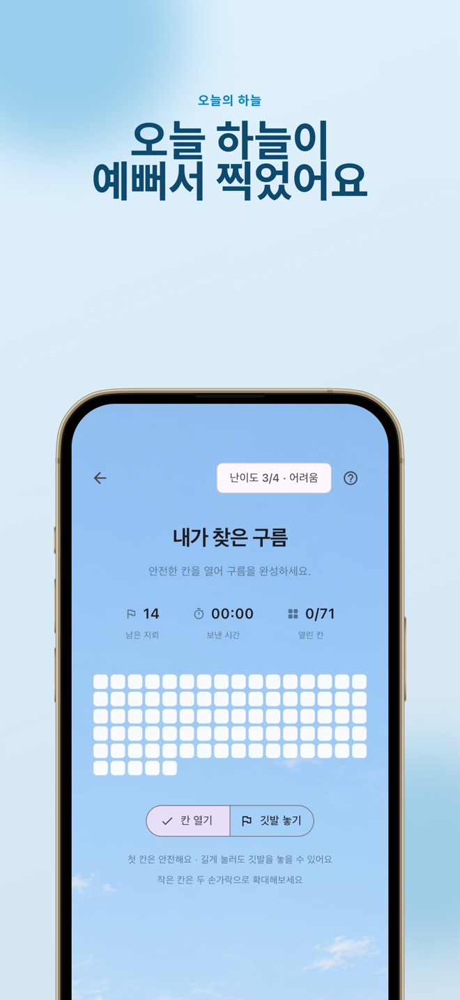
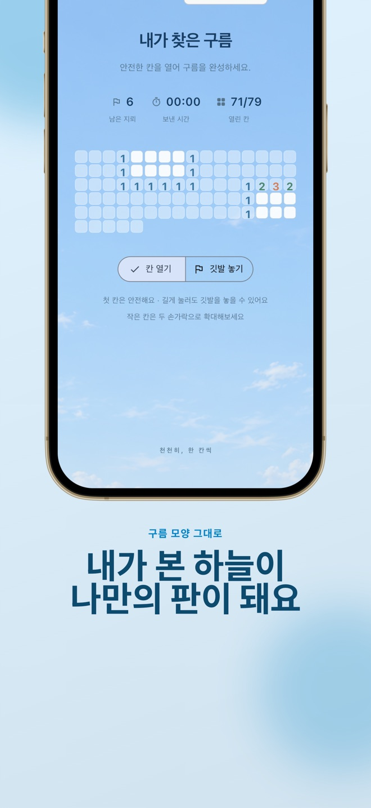
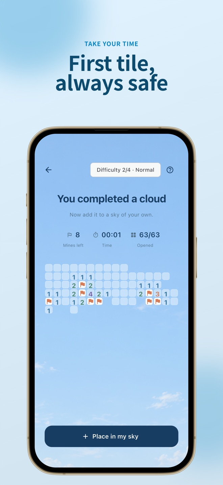
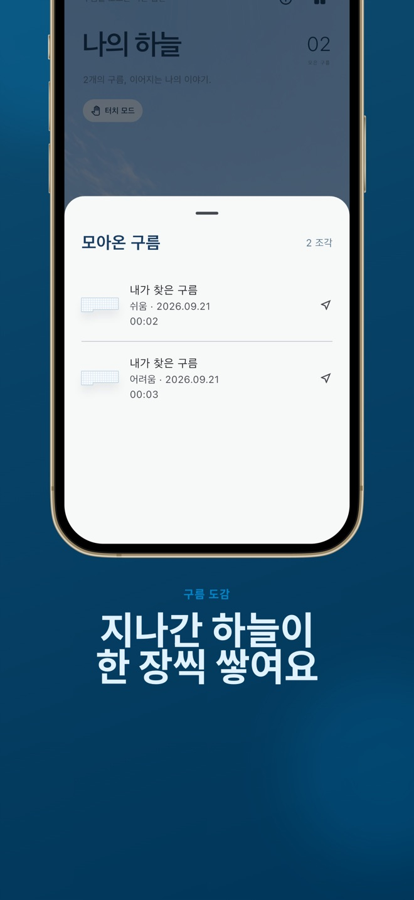
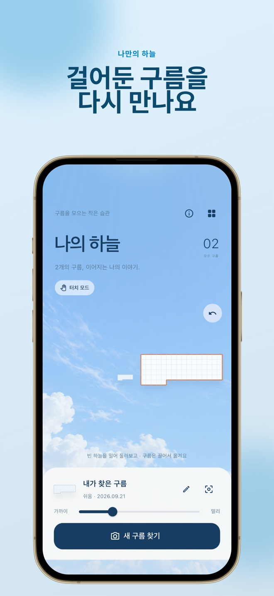

🎉 [Cloud Minesweeper] v1.1.0 릴리즈
📅 릴리즈 날짜: 2026-10-04 · 첫 출시(v1.0): 2026-09-24

지뢰찾기:구름(영문명 Cloud Minesweeper) v1.1.0을 공개합니다. 하늘을 찍으면 사진 속 구름 모양 그대로 지뢰찾기 판이 만들어지고 풀어낸 구름을 휴대폰이 향한 방향에 걸어 두는 iPhone 게임입니다. 2026년 9월 24일 v1.0으로 App Store에 처음 올라갔고 열흘 사이 v1.0.1, v1.0.2, v1.1.0이 이어졌습니다. 이번 버전에서는 한국어 밖으로 나가는 일, 즉 영어·일본어·중국어(간체) 지원에 집중했습니다.
블로그에 이 앱을 쓰는 건 처음이라 앱이 무엇인지와 지나간 세 버전도 함께 적어 둡니다.
🎯 What it is
처음 기획은 카메라 화면에서 구름을 실시간으로 인식해 바로 판으로 바꾸는 게임이었습니다. 실제로 낸 1.0은 한 장을 찍은 뒤 분석하는 방식입니다. 실시간 프리뷰 분석은 아직 없습니다.
- ☁️ 그날의 하늘로 만든 판 — 사진을 찍으면 하늘 모델이 건물·나무를 걸러 내고, 구름 모델이 구름 영역을 찾습니다. 가장 큰 연결 영역을 16×16 격자에 올려 판을 만듭니다. 네모반듯한 판이 아니라 그날 구름의 윤곽을 따라가므로 같은 판이 두 번 나오지 않습니다. 자동 판독이 마음에 들지 않거나 실패하면 ‘모양 수정’에서 직접 칸을 고를 수 있습니다
- 🎲 사진마다 난이도가 정해집니다 — 쉬움·보통·어려움·전문가 네 단계가 각각 25% 확률로 배정되고 지뢰 비율은 8%·12%·17%·22%입니다. 첫 칸은 어느 난이도에서든 안전합니다
- 📖 구름 도감 — 이긴 판의 구름만 모읍니다. 수집 날짜, 난이도, 걸린 시간이 함께 남습니다
- 🧭 나만의 하늘 — 모은 구름을 휴대폰이 향한 방향에 걸어 둡니다. 동쪽에 둔 구름은 동쪽을 바라볼 때 다시 보입니다. 위치는 화면 픽셀이 아니라 방위각·고도각·상대 거리로 저장하고 가까이 ↔ 멀리 슬라이더로 거리를 0.5–6배까지 조절합니다
- 🔒 사진과 구름 판독은 기기 안에서 끝납니다. 두 모델(합계 약 4.9MB)은 앱에 들어 있습니다. 도감에는 구름 칸 모양만 저장하고 촬영 임시 파일은 처리가 끝나면 지우려고 시도합니다. 계정도 없습니다

출시 직전에 구름 모델을 다시 학습했습니다
1.0을 내기 전에 가장 크게 막힌 건 모델 라이선스였습니다. 처음 넣은 구름 모델은 SWIMSEG 데이터로 학습했는데 이 데이터가 CC BY-NC 4.0이라 비상업 조건이 붙어 있었습니다. 이 조건으로는 App Store에 낼 수 없었습니다.
그래서 같은 구조의 모델을 COCO-Stuff로 다시 학습했습니다. 주석은 CC BY 4.0이고 사진은 COCO 메타데이터에서 상업 이용과 2차 저작을 모두 허용한 것만 골랐습니다(CC BY 2.0 316장, CC BY-SA 2.0 170장, 저작권 제한 없음 4장). SWIMSEG 가중치와 라이선스, 테스트 자료는 저장소에서 모두 지웠습니다.
그런데 COCO 주석은 하늘 전체를 통째로 ‘구름’으로 칠한 경우가 많았습니다. 그대로 학습하면 “하늘이면 구름”을 배웁니다. 구름으로 칠해진 영역에서 명백히 파란 화소만 빼고 구름과 맑은 하늘이 반반에 가깝게 보이는 정사각 크롭을 골라 490장을 만들었습니다. 이 정제는 앱이 원래 쓰던 색상 규칙을 일부 빌려 온 것이라 아래 비교에서 색상 규칙 쪽이 유리해질 수 있다는 점도 평가 문서에 같이 적어 두었습니다.
학습에 쓰지 않은 132장으로 비교한 결과입니다.
| 지표 | 이전 색상 규칙 | 새 구름 모델 |
|---|---|---|
| 16×16 셀 IoU | 63.5% | 74.2% |
| 최종 구름 조각 IoU | 56.6% | 67.2% |
| 셀 정밀도 | 88.8% | 84.3% |
| 셀 재현율 | 69.0% | 86.1% |
이전 SWIMSEG 모델이 더 정확했지만 라이선스가 분명한 쪽을 택했습니다. 정밀도는 조금 내려가고 재현율이 크게 올랐습니다. 이 숫자는 해당 데이터에서의 영역 일치도이고 휴대폰으로 찍은 사진의 인식 성공률은 아닙니다. 평가 사진이 대부분 낮 사진이라 야간·역광은 증명하지 못했습니다. 그래서 결과 확인, 직접 수정, 다시 찍기는 그대로 남겨 두었습니다.
✨ What’s New
영어·일본어·중국어(간체)로도 즐길 수 있습니다
1.0.2까지 이 앱의 문구는 한국어로 코드에 직접 박혀 있었습니다. v1.1.0에서는 앱 문구를 Flutter의 gen-l10n 리소스 파일(137개 키)로 옮기고 영어, 일본어, 중국어(간체)를 더했습니다.
화면에 바로 보이는 문구만의 일이 아니었습니다. 구름 분석 결과 문장, 저장 실패 안내, 난이도 이름처럼 위젯 밖 코드에서 만들던 글자도 이제 문장 대신 키를 돌려주고 화면에서 언어에 맞게 바꿉니다. 새로 얻은 구름의 기본 이름은 사용자의 언어로 붙고 이미 저장된 도감은 그대로 둡니다.

언어 목록에서는 영어를 맨 앞에 두었습니다. 네 언어 어디에도 해당하지 않는 기기에서는 영어로 보입니다. 앱 이름도 언어마다 다릅니다 — Cloud Minesweeper, 雲のマインスイーパー, 云朵扫雷. iOS의 카메라·모션 권한 문구도 언어별로 넣었습니다.
레이아웃 테스트를 모든 언어로 돌리도록 바꾸자 일본어가 320px 폭 화면에서 넘치는 곳이 하나 걸렸습니다. 스토어 스크린샷을 언어별로 찍으면서는 일본어 번역 두 쌍이 같은 말로 겹친 것을 발견해 도감 시트와 구름을 찾은 화면에 서로 다른 제목을 줬습니다. 스크린샷은 다섯 화면을 네 언어로 다시 찍었습니다.
연령 등급 설문의 ‘광고’ 항목 때문에 거절됐습니다
v1.1.0은 한 번 자동 거절됐습니다. 사유는 App Review 지침 2.3.6(정확한 메타데이터)이었습니다. v1.0.1부터 광고가 들어갔는데, 연령 등급 설문의 ‘광고(Advertising)’ 항목이 1.0 때 답한 ‘아니요’로 남아 있었습니다. 광고를 넣으면서 App Privacy 설문은 다시 썼지만 연령 등급 설문은 다시 보지 않았던 겁니다. 그 사이 v1.0.1과 v1.0.2는 그대로 통과했고 v1.1.0에서 걸렸습니다.
항목을 ‘예’로 바꿨고 등급은 4+ 그대로였습니다. 같은 제출을 2026-10-03에 다시 보냈고 그 사이 영어·일본어·중국어 등록정보의 개인정보처리방침 링크를 새로 만든 영어 번역 페이지로 바꿨습니다. v1.1.0은 다음 날인 2026-10-04 판매가 시작됐습니다.
📜 Version History
| 버전 | 빌드 | 날짜 | 내용 |
|---|---|---|---|
| v1.0 | 7 | 2026-09-24 | 첫 출시. 사진 퍼즐, 구름 도감, 나만의 하늘, 상업 이용 가능한 데이터로 다시 학습한 구름 모델 |
| v1.0.1 | 9 | 2026-09-28 | 카메라 확대(두 손가락·슬라이더), AdMob 전면 광고 |
| v1.0.2 | 10 | 2026-10-01 | 기기 언어와 무관하게 Flutter 기본 문구를 한국어로 고정, App Store 마케팅 URL 등록 |
| v1.1.0 | 11 | 2026-10-04 | 영어·일본어·중국어(간체) 지원 |
날짜는 App Store 버전 기록 기준(한국 시간)입니다.
v1.0.1 — 카메라 확대와 광고
구름은 작거나 멀리 있는 경우가 많아 촬영 화면에 두 손가락 확대와 슬라이더를 넣었습니다. 최대 8배까지입니다. 그 이상은 디지털 확대가 잡음만 키우기 때문입니다. 현재 배율은 미리보기에 표시됩니다.
이 기능은 원래 1.0에 들어갈 수도 있었습니다. 확대 기능과 함께, 첫 카메라 권한 팝업이 떠 있는 동안 앱이 카메라를 닫아 버려 권한을 허용해도 “카메라를 연결하지 못했어요”가 나오던 문제를 고친 빌드 8을 올려 두었습니다. 다만 iPhone에서는 빌드 7로도 첫 권한 허용 때 카메라가 정상으로 열리는 것을 확인해서 심사 중이던 1.0은 빌드 7 그대로 두고 나머지를 1.0.1로 미뤘습니다.
광고는 Google AdMob 전면 광고 하나입니다. 게임에서 진 뒤 ‘다시 도전’을 누를 때와, 이긴 뒤 ‘내 하늘에 놓기’를 누를 때 광고가 미리 로드돼 있으면 나옵니다. 판을 푸는 중에는 나오지 않고 AdMob 광고 단위에서 사용자당 3분에 한 번으로 빈도를 제한했습니다. SDK를 시작하기 전에 Google의 동의 절차(UMP)를 거치고 앱 추적 투명성(ATT) 팝업은 띄우지 않아 광고 식별자(IDFA)를 쓰지 않습니다. Debug 빌드는 Google 테스트 광고 단위만 씁니다.
광고가 들어오면서 1.0 때 적어 둔 문장들을 고쳐야 했습니다. App Store 설명의 “계정도 광고도 추적도 없어요”는 “계정도 추적도 없어요”가 됐고 App Privacy 설문은 ‘데이터 수집 안 함’에서 Google Mobile Ads SDK 기준 7개 유형(대략적인 위치, 기기 ID, 제품 상호 작용, 광고 데이터, 충돌·실적·기타 진단 데이터)으로 바꿨습니다. 모두 사용자 신원에 연결하지 않고 추적에 쓰지 않는다고 답했습니다. 사진과 구름 모양이 기기 밖으로 나가지 않는 건 그대로입니다.
v1.0.2 — 한국어 고정과 마케팅 URL
앱 문구는 한국어인데 Flutter가 직접 그리는 뒤로 가기 툴팁, 텍스트 선택 메뉴, 화면 읽기 레이블은 기기 언어를 따라가 영어 기기에서 영어로 나왔습니다. 앱 언어를 한국어로 고정해 이 섞임을 막았습니다. 사흘 뒤 v1.1.0에서 앱 전체가 네 언어가 되면서 이 고정은 풀렸고 한 버전짜리 처방이 됐습니다.
같은 버전에 App Store 마케팅 URL을 넣었습니다. 1.0.1을 낸 뒤 AdMob iOS 앱 인증이 실패했는데, 원인은 app-ads.txt 파일이 아니라 마케팅 URL이 비어 있던 것이었습니다. AdMob은 마케팅 URL의 도메인에서 app-ads.txt를 찾는데, 파일은 이미 도메인에 올바르게 있었지만 가리키는 URL이 없었습니다. 출시된 버전의 마케팅 URL은 바꿀 수 없어 다음 버전에 실었고 v1.0.2가 나온 뒤 App Store 공개 정보에 반영되기까지 약 하루가 걸렸습니다. AdMob 인증은 2026-10-03에 끝났습니다.

💻 Platforms
- iOS — iOS 16.0 이상, iPhone 전용. App Store에서 무료, 4+. 한국어·영어·일본어·중국어(간체). 세로 고정
- Android — 출시 보류. 아래 What’s Next에 이유를 적었습니다
🔜 What’s Next
Android는 멈춰 있습니다. Flutter로 고른 이유 중 하나가 Android였고 Play Console에는 앱 등록, 콘텐츠 선언, 네 언어 등록정보가 다 채워져 있으며 내부 테스트 트랙에 1.1.0(빌드 11)도 올라가 있습니다. 막힌 곳은 개인 개발자 계정의 프로덕션 신청 조건입니다. 비공개 테스트에서 12명 이상이 14일 이상 테스트해야 하는데, 지금 테스터가 없습니다. 다시 시작하려면 테스터를 모아 비공개 테스트를 돌리거나, 계정을 조직 계정(D-U-N-S)으로 바꿔야 합니다. 2026-10-02에 보류하기로 했고 재개 시점은 미정입니다.
iOS 다음 버전도 미정입니다. 처음 기획했던 실시간 프리뷰 분석은 아직 하지 않았고 구름 모델이 야간·역광 사진에서 얼마나 맞는지도 확인하지 못했습니다.
